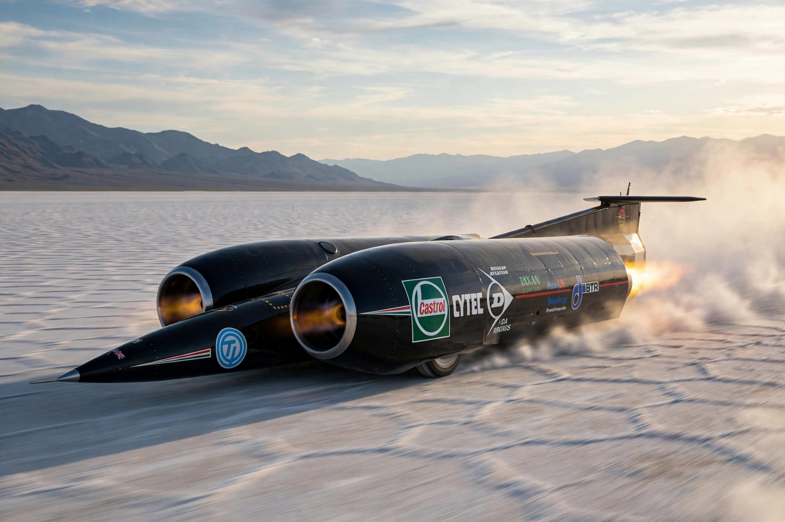

| Absolute land speed record | |
|---|---|
| Speed | 763.035 mph (1,227.986 km/h) |
| Vehicle | Thrust SSC |
| Driver | Andy Green |
| Date | 15 October 1997 |
| Location | Black Rock Desert, Nevada |
The land speed record is the highest speed achieved by a person using a vehicle on land. The record is regulated by the Fédération Internationale de l'Automobile (FIA) and must be set over a measured mile or kilometre, with the average of two runs in opposite directions.

The absolute record stands at 763.035 mph (1,227.986 km/h), set by Royal Air Force pilot Andy Green in the British twin jet-powered car Thrust SSC at Black Rock Desert, Nevada, on 15 October 1997 — exactly fifty years after Chuck Yeager first broke the sound barrier in flight. It was the first officially recognised supersonic land speed, at Mach 1.02.
The earliest records were set on French roads in 1898–1899; the first over 100 km/h (Jeantaud Duc, 105.9 km/h) was set in an electric car. Interwar records moved to beaches: Malcolm Campbell and Henry Segrave at Daytona and Pendine, George Eyston at Bonneville. After the war, jet and rocket cars took over — Craig Breedlove's Spirit of America duels at Bonneville in the 1960s, Gary Gabelich's Blue Flame (622.4 mph, 1970) and the duel between Richard Noble's Thrust2 (633.5 mph, 1983) and its successor Thrust SSC. Wheel-driven records are tracked separately; the fastest piston-engined car is the Speed Demon, at over 470 mph.